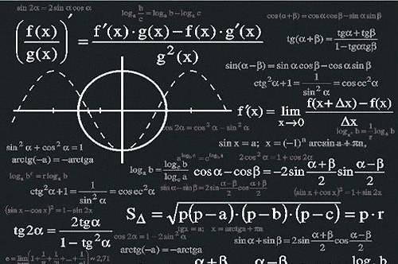
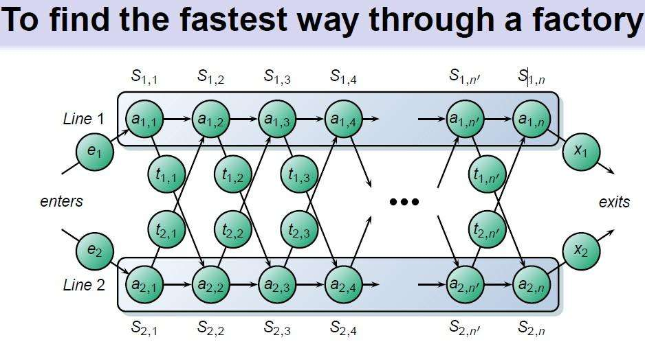

走进微积分的奇妙世界
同学们！还在为微积分难学而发愁吗？不要担心，就让尹逊波老师带我们突破重点难点。
152019-7
你知道极限吗？ 第一讲：函数与极限
162019-7
“导数”来了带着他的好朋友“微分” 第二讲：导数与微分
172019-7
“导数”的另一个好朋友“积分” 第三讲：积分与微分方程
182019-7
来试试多元函数吧！ 第四讲：多元函数微分学
192019-7
几种典型的积分 第五讲：多元函数积分学
202019-7
最后一讲了哟！ 第六讲：任意项级数与幂级数
C语言程序设计
和苏小红老师领略C语言的魅力
262019-5
初识C语言从认识常量与变量开始 第一讲：C的基本语法
272019-5
无处不在的抉择 第二讲：条件语句
282019-5
周而复始的循环之道 第三讲：循环语句
292019-5
分工与合作的艺术 第四讲：函数的力量
302019-5
《盗梦空间》的逻辑：探寻递归的奥秘 第五讲：递归
312019-5
C语言世界中所向披靡的“金箍棒” 第六讲：指针

理解几种常见的算法
王宏志老师为你深入浅出地讲解这些算法
看看课程背景 第一讲：算法概述
分而治之 第二讲：分治算法
避免重复计算 第三讲：动态规划
我还要更多，更多…… 第四讲：贪心算法
12019-6
你能找到“我”吗？ 第五讲：搜索策略
262018-6
常见的搜索需求 第六讲:字符串搜索